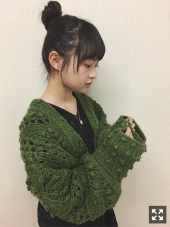
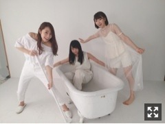

幕張メッセ握手会
ありがとうございました。
生誕T好評だった～わーい
重力猫動画も見ていただけて嬉しい～

母が19歳の頃
ロンドンのキングスロードにある
Worlds Endで買ったというニットボレロ。
無理やり巻いたらマフラーにもな～る。
色味良し形良し物持ち良し素晴らしい

最近は掃除とお風呂がマイブームです。
あとは母にいい感じの花瓶もらったので
お花を生ける楽しみができました！
あ、EX大衆で絢音ちゃんと対談してます。
文面から伝わってくるあの距離感よ！！
キモチワルイって思われてない心配、、、
最近、激寒いこの時期に
玲香と夜散歩すること多いんだけど
なかなか楽しいんだよね～
乃木中でじゃんけんした時
設楽さんと日村さんがめっちゃ楽しそうで
はあ、なんて素敵なお二人！！！！！
って思った、そういう瞬間おおい。
2月4日に公開される
映画『傷だらけの悪魔』
ほんの少し出演させていただきます。
山岸聖太監督の長編映画～！
シークレットグラフィティーMV撮影から
しばらくしての撮影でした、、
関われて有難き幸せです。
漫画が映像になって更にえぐみが増し、
生々しくて苦しくなってしまいます、、
音といい色彩といい最高に濃ゆい。
映画オリジナルキャラクターで
役名はマリコなのですが、、
「夏のせい。」を思い出すけど、、
確実にそれだね？？！！！
まりか